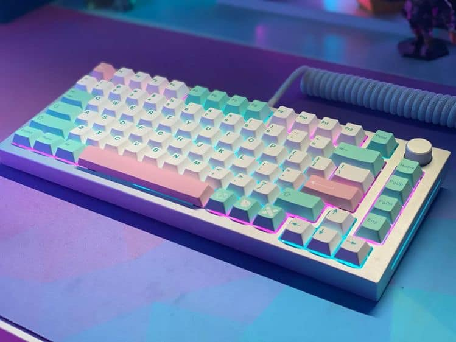
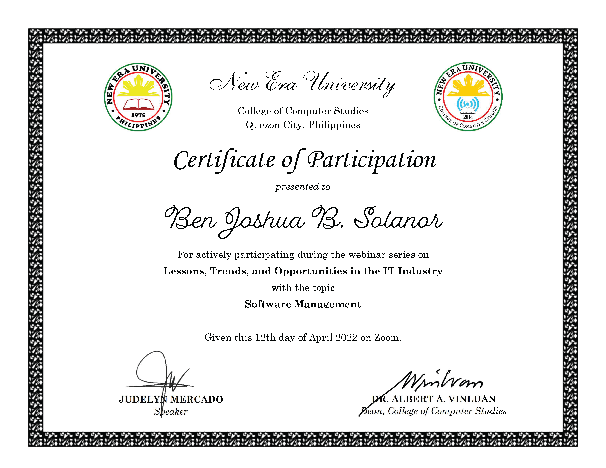
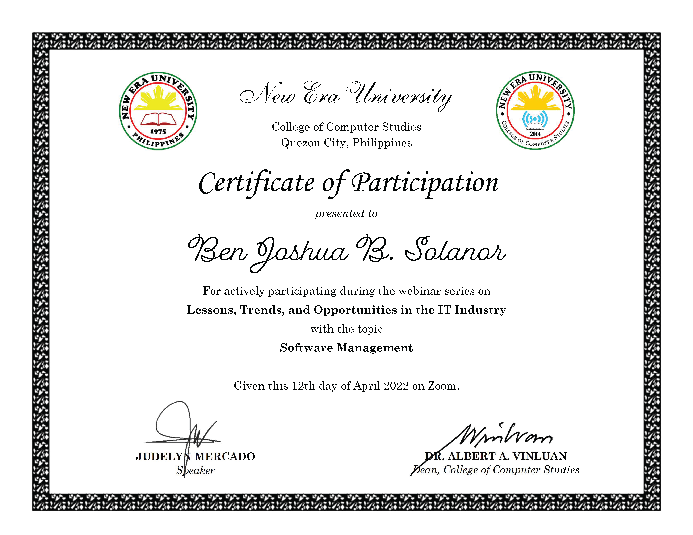

The best keyboard for all (Glorious GMMK Pro)
One of the best peripherals that an individual wants, are keyboard. This is the truth that came later the pandemic, where people are submerged with online activities where it came to the point that keyboard is now a thing. This is not new to the gamers and keyboard enthusiast, but this controversy lit an event that caused the market for the keyboard to rise.
The best budget keyboard for all
Rakk lam ang is the most affordable, yet the best budget keyboard for all thoc people out there. This is because of its low cost but no compromised quality on the product.


 
